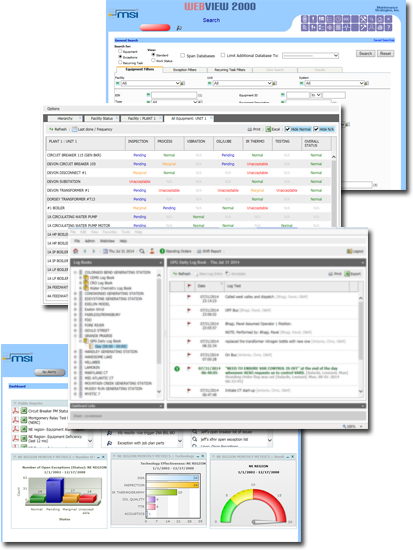

WebView
Before Navigator, MRG used WebView to manage their lab. Technicians could enter sample data, generate reports and perform a wide variety of calculations however, Webview was not intuitive and there was no way to track where samples were in the analysis process.
Due to these inefficiencies, samples would often get "lost" in the process and require lab technicians to spend excess time looking for them in the database. Webview also lacked the ability to manage customer accounts and send automated emails meaning employees would have to manually email customers their analysis reports.
Webview also costs $2000 per month ( $24,000 per year )
